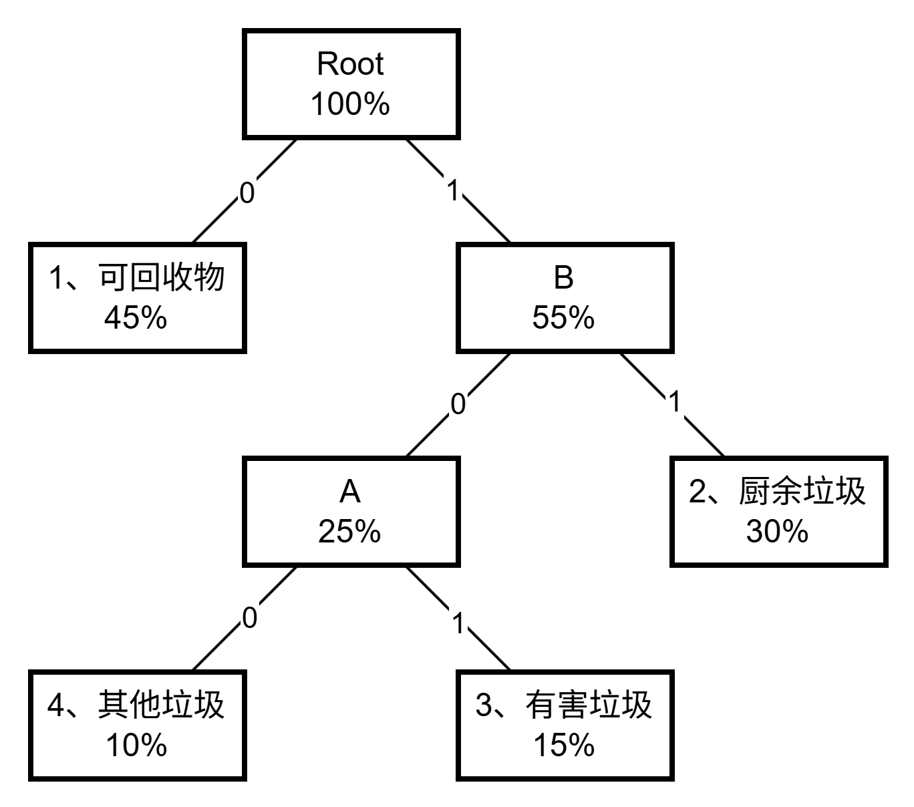

第一大题
1.1
分支限界法和回溯法的区别及相同点？
求解目标不同：
- 回溯法的求解目标是找出解空间树中满足约束条件的所有解
- 分支限界法的求解目标是找出满足约束条件的一个解，或是在满足约束条件的解中找出在某种意义下的最优解
搜索方式不同：
- 回溯法以深度优先的方式搜索解空间树
- 分支限界法以广度优先或以最小耗费优先的方式搜索解空间树
相同点：
- 均基于解空间树搜索；采用剪枝优化搜索效率。
1.2
数学建模。
- 问题转化：将环保投资问题建模为 0-1 背包问题模型。
- 变量定义：$x_i \in \{0,1\}$ 表示是否投资第 $i$ 个方案（1=投资，0=不投资）。
- 目标函数：最大化总减碳量 $\max \sum_{i=1}^{3} v_i x_i$（$v_i$ 为减碳量）。
- 约束条件：总成本 $\sum_{i=1}^{3} w_i x_i \leq 30$（$w_i$ 为成本）。
- 结论：减碳量等效为背包"价值"，成本等效为"重量"，投资上限 30 等效为背包容量。
队列式分支限界法求解过程？最大减碳量？最优方案组合？
- 构造解空间树：三层二叉树（左分支=选方案，右分支=不选方案）。
-
搜索过程：
[A] B, C => B, C [B, C] D, E => E [C, E] F, G => F, G [E, F, G] J, K => K(45)[1,0,0] [F, G] L, M => L(50)[0,1,1], M(25)[0,1,0] [G] N, O => N(25)[0,0,1], O(0)[0,0,0] - 最优值（最大减碳量）：50 万吨
- 最优解（最优方案组合）：选方案 2 和方案 3，即 $x = [0,1,1]$
1.3
回溯法编程实现，找这个方案的最大减碳量以及最优方案组合。
[回溯函数]
void Backtrack(int i) {
// 如果到达叶子节点
if (i > n) {
bestp = cp;
return;
}
// 进入左子树
if (cw + w[i] <= c) {
cw += w[i];
cp += p[i];
Backtrack(i + 1);
cw -= w[i];
cp -= p[i];
}
// 进入右子树
if (Bound(i + 1) > bestp) {
Backtrack(i + 1);
}
}[限界函数]
private static double Bound(int i) {
// 计算剩余容量
double cleft = c - cw;
double bound = cp;
// 以物品单位重量价值递减序装入物品
while (i <= n && w[i] <= cleft) {
cleft -= w[i];
bound += p[i];
i++;
}
// 装满背包
if (i <= n) {
bound += p[i] / w[i] * cleft;
}
return bound;
}第二大题
2.1
贪心算法的原理是什么？
- 贪心算法是一种通过局部最优选择来构建全局最优解的算法。
- 它依赖于贪心选择性质和最优子结构，即每一步都选择当前最优，期望最终得到全局最优解，且无需回溯。
哈夫曼编码原理是什么？
- 变长编码：哈夫曼编码是一种变长编码方式。出现频率高的字符分配较短的编码，出现频率低的字符分配较长的编码。
- 频率排序：首先将字符按照出现频率从小到大排序。
-
构造哈夫曼树：
- 每次选取频率最小的两个节点。
- 创建一个父节点，其频率等于这两个子节点频率之和。
- 将该父节点按照频率大小重新插入到排序好的节点队列中。
- 重复以上步骤，直到队列中只剩下一个节点，这个节点就是哈夫曼树的根节点。
-
编码：在哈夫曼树上，左分支编
0右分支编1，直到到达叶子节点，路径上的0和1组成的字符串就是该字符的哈夫曼编码。
定长编码的原理是什么？
定长编码也称为等长编码，是一种数据编码方式，其中每个字符或符号都用固定长度的二进制位来表示。
定长编码计算方式：
- 确定字符集大小 $N$（需编码的不同字符总数）。
-
计算最小编码位长 $L$：$2^L \geqslant N$
- 等价对数形式：$L = \lceil \log_2 N \rceil$，其中 $\lceil \cdot \rceil$ 表示向上取整函数。
2.2
构造哈夫曼树及编码，写出具体的构造过程，写出每种垃圾名称的具体编码。
垃圾类型由小到大排序：
| 4 | 3 | 2 | 1 |
|---|---|---|---|
| 其他垃圾 | 有害垃圾 | 厨余垃圾 | 可回收垃圾 |
| 10% | 15% | 30% | 45% |
构造哈夫曼树：
根据哈夫曼树可得：
- 可回收物：
0 - 厨余垃圾：
11 - 有害垃圾：
101 - 其他垃圾：
100
2.3
编码长度与节省比例计算
-
定长编码：
- 4 种类型需 2 位二进制（$2^2=4$），总码长 = $2 \times 10000 = 20000$ 位（假设处理 1 万次）。
-
哈夫曼编码：
- 可回收物：1 位 × 4500 次 = 4500 位
- 厨余垃圾：2 位 × 3000 次 = 6000 位
- 有害垃圾：3 位 × 1500 次 = 4500 位
- 其他垃圾：3 位 × 1000 次 = 3000 位
- 总码长 = $4500 + 6000 + 4500 + 3000 = 18000$ 位。
-
节省比例：
- 节省位数 = $20000 - 18000 = 2000$ 位
- 节省比例 = $2000 / 20000 = 10\%$。
第三大题
3.1
动态规划求解最短路径步骤
- 找出最优解的性质，并描绘其结构特征。
- 递归的定义最优值。
- 以自底向上的方式计算出最优值，构造最优解。
3.2
建立状态转移方程
-
定义：
- $s$：当前节点
- $x$：节点 $s$ 的前驱节点
- $c(x, s)$：$x$ 到 $s$ 的边
- 转移方程分段函数： $$ f(s) = \begin{cases} 0 & \text{若 } s = 1 & \text{(起点)} \\ \min \big\{ f(x) + c(x, s) \big\} & \text{若 } s \neq 1 & \text{(其他节点)} \end{cases} $$
填表计算最优值
- $f[i]$：从节点 1 到节点 $i$ 的最短距离
- $p[i]$：节点 $i$ 的前驱节点
| 1 | 2 | 3 | 4 | 5 | 6 | 7 | 8 | 9 | 10 | |
|---|---|---|---|---|---|---|---|---|---|---|
| f[i] | 0 | 4 | 2 | 3 | 8 | 6 | 11 | 12 | 12 | 16 |
| p[i] | 0 | 1 | 1 | 1 | 3 | 4 | 4 | 5 | 6 | 9 |
最短路径长度及最优路线
- 最短路径长度：$f(10) = 16$。
- 路径：$1 \to 4 \to 6 \to 9 \to 10$。
第四大题
4.1
分治法
将 $X，Y$ 拆分为两半（$k = n/2 = 4$ 位）：
$A=1234$，$B=5678$，$C=5678$，$D=4321$
$X = A \times 10^k + B$，$Y = C \times 10^k + D$
$XY = AC \cdot 10^{2k} + (AD + BC) \cdot 10^k + BD$
乘法次数：4 次
4.2
算法优化
优化关键点：
$$ \begin{align*} (AD + BC) &= (AC + AD + BC + BD) - AC - BD \\ &= A(C+D) + B(C+D) - AC - BD \\ &= (A+B)(C+D) - AC - BD \end{align*} $$$XY = AC \cdot 10^{2k} + [(A+B)(C+D) - AC - BD] \cdot 10^k + BD$
乘法次数：$AC$、$BD$、$(A+B)(C+D)$
4.3
复杂度对比
- 优化前：$T(n) = 4T(n/2) + O(n)$，解得 $T(n) = O(n^2)$。
- 优化后：$T(n) = 3T(n/2) + O(n)$，解得 $T(n) = O(n^{\log_2 3}) \approx O(n^{1.585})$。
- 结论：优化后效率显著提升（指数级降低）。